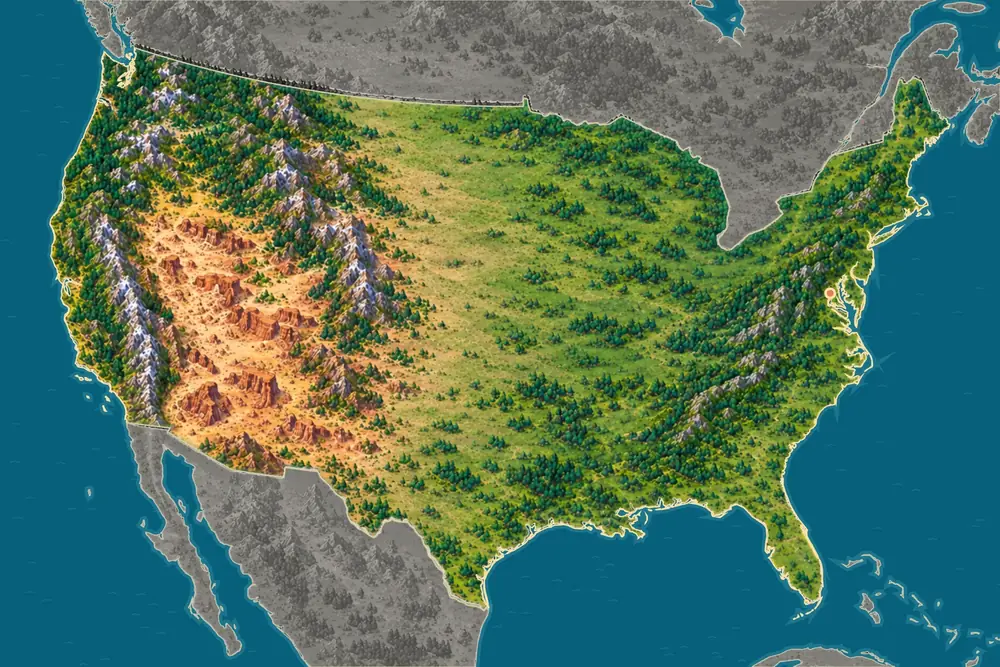
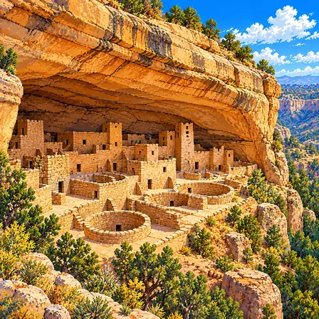
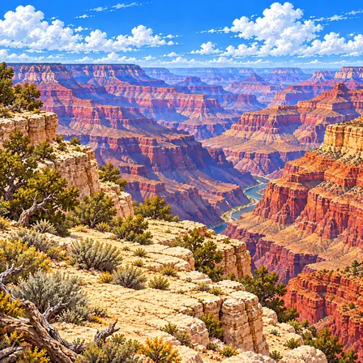
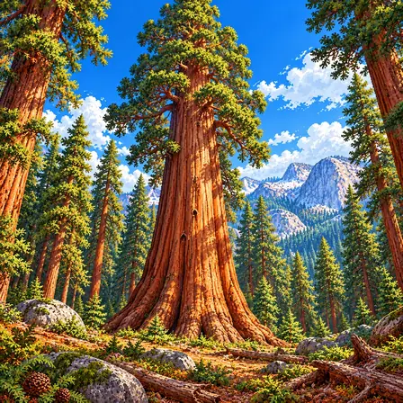
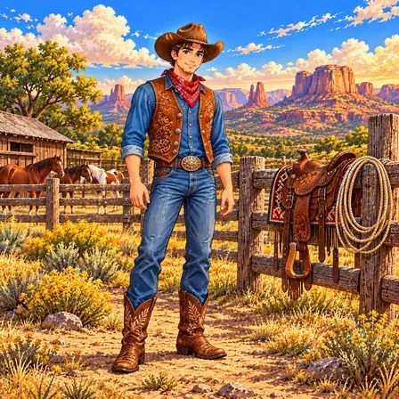
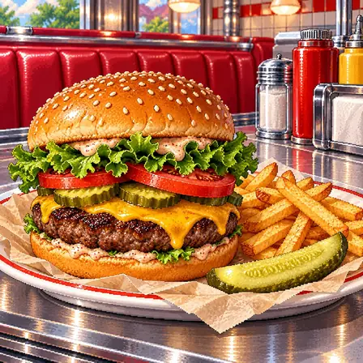
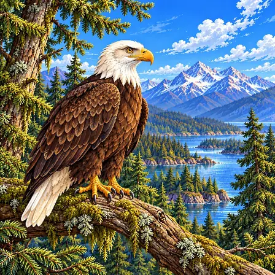

Mountains and dry lands of the west
In the west, the Rocky Mountains and the ranges near the Pacific run far from north to south. Between them lie dry basins and plateaus, with wide stretches of red rock and desert.
World Geography Atlas › North America › Northern America

United States of America
The Statue of Liberty · one of the most famous countries in the world.

The United States has high mountains and red deserts in the west and wide plains in the middle. In the north, five lakes as big as seas sit together. Alaska and the volcanic islands of Hawaii, across the sea, are also part of the country.
The mainland divides into the Rocky Mountains and dry plateaus in the west, the Great Plains in the middle and the Appalachian Mountains in the east. Alaska in the north and Hawaii in the Pacific lie apart from the mainland.
In the west, the Rocky Mountains and the ranges near the Pacific run far from north to south. Between them lie dry basins and plateaus, with wide stretches of red rock and desert.
East of the Rockies spreads a wide, flat land called the Great Plains. The Appalachian Mountains in the east are very old, worn down over a long time, so they are lower and rounder than the Rockies.
Along the northern border with Canada, five large lakes, the Great Lakes, are linked together. They hold about 21% of the world's surface fresh water and 84% of North America's.
Alaska, in the far northwest, has Denali, about 6,190 m high, the tallest mountain in North America. Hawaii, in the middle of the Pacific, is a chain of islands built by volcanoes rising from the sea floor.
Source: USGS, New Elevation for Nation's Highest Peak · USGS, Hawaiian Islands and the hotspot
Over about 6 million years, the Colorado River cut the Grand Canyon, nearly 1,500 m deep. The stacked rock layers in its walls record 2 billion years of Earth's history.
Beneath Hawaii is a place where magma keeps rising, called a hotspot. The ocean plate slowly moves northwest over it, leaving a line of islands. Islands get older to the northwest, and the Big Island at the southeast end now sits over the hotspot.
A city, a heritage site, nature, a plant, culture, food, an animal, a greeting and the flag of United States, each drawn as pixel art.
Washington, D.C. is the capital of the United States. It is a special city that is not part of any state. Monuments and memorials line a long, grassy park.
Washington, D.C., is the capital of the United States, where about 700,000 people live. It is a federal district that belongs to no state (D.C. = District of Columbia). In 1790 Congress decided on a new capital, and Pierre Charles L'Enfant designed its radial road system. It is a planned city where the Capitol, the Washington Monument, and the Lincoln Memorial are lined up along the axis of the National Mall.

Mesa Verde is an old Indigenous village built into cliffs. About 1,000 years ago, people built stone houses in hollows in the cliffs. The biggest village has more than 150 rooms.
Mesa Verde is the ancient cliff dwellings of the Ancestral Puebloan people, built into cliffs in the state of Colorado. From about 600 to 1300 CE, these Indigenous people built homes of sandstone blocks in the hollows of the cliffs. The largest, Cliff Palace, is a huge housing complex with more than 150 rooms and kivas (ceremonial spaces). Why it was suddenly left around 1300 is still being studied. It is a UNESCO World Cultural Heritage site.

The Grand Canyon is a giant canyon carved by a river. In places it is more than 1,800 m deep. Its walls show Earth's long history in stripes of rock.
The Grand Canyon is a canyon the Colorado River cut out of the bedrock over about 6 million years in the state of Arizona. It is 446 km long, up to 29 km wide, and up to 1,857 m deep. On its walls a long stretch of Earth's history is laid bare in layers, from Precambrian rock about 1.8 billion years old at the bottom to Paleozoic rock about 270 million years old near the top. Indigenous peoples have lived in the canyon since very long ago, leaving rock art and the remains of homes.

The giant sequoia is the biggest tree in the world. It grows more than 80 m tall with a very thick trunk. Some live for more than 3,000 years.
The giant sequoia, growing in the Sierra Nevada mountains of California in the United States, is the largest tree by volume in the world. It reaches more than 80 m tall and 9 m across, and can live for over 3,000 years. It can be seen in Yosemite and Sequoia National Parks, and the most famous tree, "General Sherman," is the largest tree on Earth by volume.

Cowboy clothes began as the work clothes of cattle drivers. The wide hat blocks the sun, and the neck scarf keeps out dust. You can still see them at rodeos.
The cowboy hat, leather boots, and jeans began as the work clothes of cowboys who drove cattle on the grasslands of the American West. In the 19th century, cowboys drove herds along trails thousands of kilometers long for months at a time. The wide-brimmed hat shaded the hot sun, and the bandana around the neck kept off the dust. The pointed toes and high heels of the boots were for easily slipping the foot in and out of the stirrup on a saddle. Even today it lives on in rodeo events and country music culture.

A hamburger is a grilled meat patty in a round bun. Cheese and vegetables go in too. It is a classic American meal with fries.
The hamburger is a famous American food, a grilled beef patty between a round bun. Its name comes from a Hamburg-style minced-meat dish from Germany, and in the late 19th century it grew in the United States into the form eaten in a bun. Put cheese on the patty and it becomes a cheeseburger, and lettuce, tomato, onion, and pickles are added too. Serving it with french fries and a cool drink is the American meal. As fast-food shops appeared in the 20th century, it spread around the world and is now a food eaten worldwide.

The bald eagle is a large bird with a white head and a yellow beak. Its wings stretch more than 2 m wide. It almost disappeared once, but protection helped it come back.
The bald eagle is a large bird of prey with a white head, a yellow beak, and a dark brown body. Its wingspan is more than 2 m, and it lives near lakes and rivers, snatching up fish to eat. It adds to the same nest on a tall tree every year, making a huge nest more than 2 m across. It became the bird that stands for the United States in 1782. It once came close to extinction from pesticide harm, but thanks to protection it has recovered to hundreds of thousands - a conservation success story.
Hello is the basic greeting in English. Friends just say "Hi." It spread widely after people started saying it to answer the telephone.
"Hello" is read "heh-LOH," an English greeting. When the telephone was invented in the late 19th century, it spread as the word to say when answering a call and settled in as an everyday greeting. Among friends, people say a shorter "Hi" or "Hey." Because the United States is a country where people from many lands live together, English keeps gaining different accents and new words. Counting everyone, about 1.5 billion people use English around the world.

The United States flag is called the Stars and Stripes. Its 13 stripes stand for the 13 original states. Its 50 stars stand for today's 50 states.
The United States' flag has stars and stripes, so it is called the "Stars and Stripes." The 13 level stripes, taking turns between red and white, stand for the 13 states when the country was first founded. The 50 white stars in the blue square at the upper left mean the 50 states of today. A star has been added each time a new state was created, so there have been 27 versions of the flag. The present 50-star flag has been used since 1960.